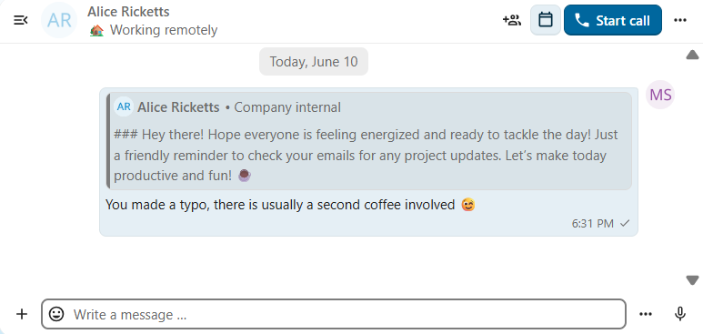
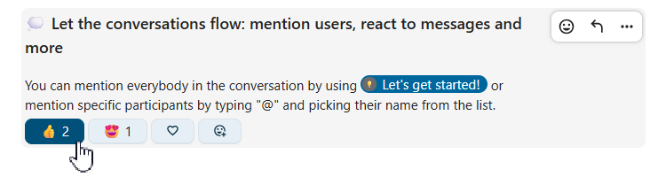

Interagera med meddelanden
Redigera meddelanden
Du kan redigera meddelanden och beskrivningar för delade filer i upp till sex timmar efter att de har skickats.

Fästa meddelanden
En moderator kan fästa viktiga meddelanden i ett samtal under en viss tid eller tills de inte längre är relevanta.

Fästa meddelanden framhävs och är tillgängliga ovanför chatten eller på fliken Delade objekt i innehållssidofältet. När du inte längre behöver ett fäst meddelande kan du via snabbåtgärderna lossa det för alla eller endast för dig själv.

Ställa in påminnelser för meddelanden
Du kan ställa in påminnelser för enskilda meddelanden. Om du vill bli påmind om ett viktigt meddelande senare håller du muspekaren över det och klickar på påminnelseikonen.

I undermenyn kan du välja när du vill få en avisering.

Du kan även vidarebefordra ett meddelande till ett annat samtal via menyn ... eller skicka det till samtalet Anteckning till mig själv för egen referens.
Söka efter meddelanden i ett samtal
Utöver den globala enhetliga sökningen kan du söka efter meddelanden i ett visst samtal. Klicka på sökikonen i samtalets innehållssidofält för att öppna sökfliken.

Du kan begränsa sökningen med filter som datumintervall och avsändare.

Trådade meddelanden
Du kan skapa trådar i samtal för att hålla diskussionerna organiserade. Alternativet för att skapa en tråd finns bland de ytterligare åtgärderna för ett nytt meddelande.

Därefter kan du lägga till en rubrik och beskrivning för tråden och starta diskussionen.

Du kan visa alla svar i en tråd antingen med svarsknappen på meddelandet eller på fliken Delade objekt i innehållssidofältet.

Du kan prenumerera på en tråd för att få aviseringar om nya svar. Du kan prenumerera från själva tråden eller från sidofältet.

Trådar som du prenumererar på är lättillgängliga via Trådar i navigeringsfältet.

Du kan redigera trådens rubrik från själva tråden eller från sidofältet.

Private replies
Private replies are messages that are forwarded directly to a one-to-one conversation between you and specific message author, to maintain privacy where it’s needed.
In group and public conversations, select a message you want to reply to privately
In message actions, select
Reply privatelyA one-to-one conversation window opens with the original message quoted
Add your response and send a message
The reply provides a full context of a quoted message — including the original sender’s name, original conversation context, and backlink.
{kind=link}

Message reactions
Add emoji reactions to messages to quickly express agreement, celebrate, or indicate emotions without typing full responses.
Hover over a message in the chat
Click the
Add reactionbutton from message actionsSelect an emoji from the list of frequently used or full picker
You can hover over a reaction to see other users who reacted with it. Click one of the existing reactions to react with the same emoji! You can click it again to remove your reaction from the message.
{kind=link}
